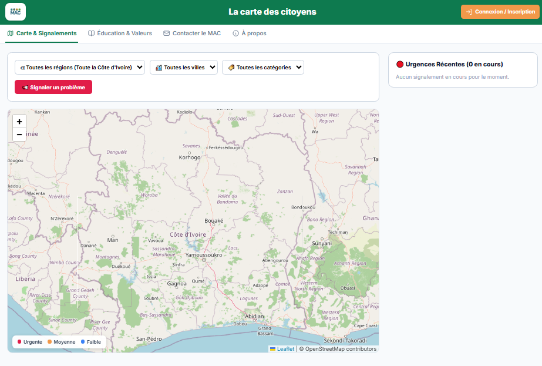

Terminé
Citoyenneté & Engagement
Carte Citoyenne
Plateforme collaborative permettant aux citoyens de signaler les problèmes de leur quartier et de coordonner des solutions avec les ONG, collectivités et entreprises engagées.
Côte d'Ivoire